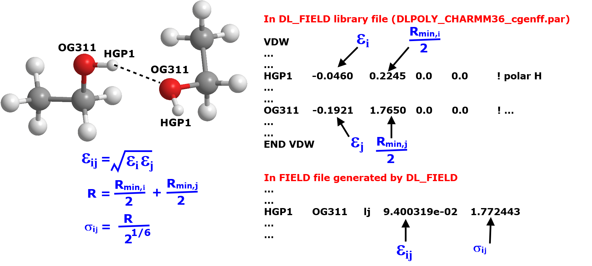
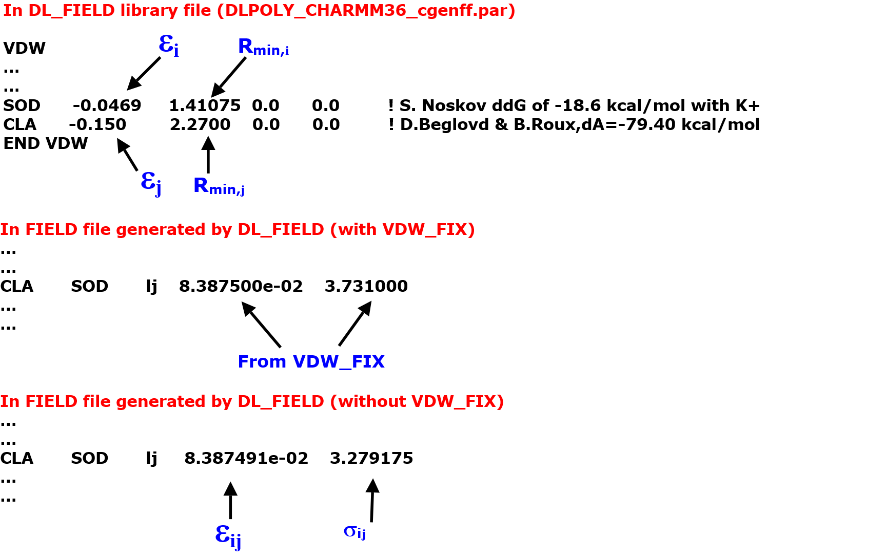
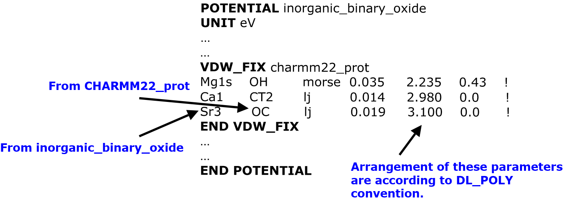

Customise VDW interactions (VDW_FIX directive)¶
This page illustrates the use of VDW_FIX directive to customise the vdw interactions between atoms i and j.
In organic FF schemes, these parameter sets are automatically derived in DL_FIELD by using some form of mixing rules involving the parameters of the pure components for i and j, respectively (see Lennard-Jones Mixing Rules).
For inorganic FF schemes, the vdw parameters for different pairs of atoms are explicitly defined in the library.
These vdw parameters can be altered. One way to do this is to override the standard vdw parameters derived from the library by using a udff file. This can potentially change all vdw interactions involving the override atom. Another way is to use VDW_FIX directive which is useful if only a specific combination of atom pairs are needed to adjust.

Without using VDW_FIX
Suppose we have a molecular system contains ethanol molecules and we want to set up a force field model by using CHARMM CGenFF.
Below illustrates how DL_FIELD determined Lennard-Jones (LJ) vdw parameters for two atoms between the ethanol molecules. The labels HGP1 and OG311 are the ATOM_KEYs expressed in the standard CHARMM CGenFF force field scheme. They are referred to the hydroxyl hydrogen and hydroxyl oxygen, respectively.
{kind=link}
In the library file, the vdw parameters for HGP1 and OG311 are independantly listed as shown above. To determined the LJ parameters for the HGP1—OG311 atom pairs, the arithmatic and geometric mixing rules are applied (mixing rules for CHARMM FF) for the \(R_{min}\) and \(\epsilon\), respectively.
Note
In DL_POLY FIELD file, the LJ parameter \(\sigma\) (steric) is used, rather than the \(R_{min}\). DL_FIELD will do the conversion internally.
VDW_FIX Syntax
The syntax for using the directive is as follows:
VDW_FIX potential_label
atom1 atom2 func p1 p2 p3
atom3 atom4 func p1 p2 p3
…
…
END VDW_FIX
Where atom1, atom2 and atom3, atom4 are two sets of atom pairs of which the vdw parameters will be redefined.
The value ‘func’ is the vdw functional form, which can be either the 12-6 Lennard-Jones (lj), morse, or Buckingham. The values p1, p2 and p3 are the parameter values of the functional forms.
The potential_label is the name of a potential scheme. Usually, this would be the same where the VDW_FIX directive is located in the .par file.
For exmaple, the CHARMM36 CGenFF contains several VDW_FIX statements in the .par file as shown below:
VDW_FIX charmm*
OG2D1 CLGR1 lj 0.200 3.400 ! NBFIX based on NMA (carbonyl oxygen in amide) and CL of CGenFF
O CLGR1 lj 0.2000 3.4000 ! NBFIX for carbonyl oxygen in amide of protein
ON1 CLGR1 lj 0.2000 3.4000 ! NBFIX for carbonyl oxygen in nucleic acid bases
ON1C CLGR1 lj 0.2000 3.4000 ! NBFIX for carbonyl oxygen in nucleic acid bases
OC2D1 CLGR1 lj 0.2000 3.4000 ! NBFIX for carbonyl oxygen in carbohydrate amides
S CLGR1 lj 0.3800 3.8300 ! NBFIX for cysteine sulphur
HS CLGR1 lj 0.2000 2.8200 ! NBFIX for cysteine sulphur
SOD OG2D2 lj 0.07502 3.23 ! CGenFF: osmotic P; carboxylate =O
SOD OG2P1 lj 0.07502 3.16 ! CGenFF: POPC optim.; phosphate =O
SOD CLA lj 0.083875 3.731 ! Protein: Osmotic pressure J Phys. Chem. Lett. 1:183-189
POT CLA lj 0.114236 4.081 ! Protein: Osmotic pressure J Phys. Chem. Lett. 1:183-189
END VDW_FIX
The potential_label is the name of a potential scheme. Normally, this would be the same as that where the VDW_FIX directive is located. In this case, it is shown with a wildcard ‘*’ (charmm*), which means ‘any CHARMM FF components’. This means the VDW_FIX will be applied to pairs of matching non-bonded atoms that belong to any CHARMM FFs. At least one of the atom must belong to CGenFF, whereas, the other atom can belong to any CHARMM FF components (protein, DNA, carbohydrates, etc).
Warning
Atom equivalence does not apply to the atoms listed in VDW_FIX. In other words, DL_FIELD only matches exactly the atoms as shown within the VDW_FIX directive.
Using VDW_FIX
Suppose the system also contain sodium (SOD) and chloride (CLA) ions. Since there is a matching (SOD and CLA) pair defined in the VDW_FIX block (see above), no mixing rule will be applied and the parameters are directly extracted from the list. Diagram below illustrates the differences in prameters with and without VDW_FIX.
{kind=link}
Using VDW_FIX in bio-inorganic systems
The VDW_FIX directive is especially useful for models using multiple-potential models such as bio-inorganic systems. For example, suppose a system consists of a binary oxide inorganic material and an organic compound. The inorganic material is applied with the inorganic_binary_oxide FF scheme, whereas, the organic component is applied with, say, CHARMM22_prot FF scheme.
By default, the vdw parameters between an inorganic and organic component are not defined. DL_FIELD will display these atom pairs but not the parameters: It is up to you to insert these values manually.
However, you can use VDW_FIX directive to instruct DL_FIELD to insert vdw parameters for these mixed component atom pairs. For example, consider the following VDW_FIX directive, perhaps included in a udff file for the inorganic_binary_oxide FF scheme:
{kind=link}
The directive VDW_FIX charmm22_prot means, for each atom pair that is listed within the directive, one atom must belong to the inorganic_binary_oxide and the other atom must belong to the charmm22_prot scheme.
Note
Only two and only two FF schemes are allowed within a VDW_FIX directive block and only one block is allowed in each file: one FF scheme is implicit to which the VDW_FIX is located, and the other FF scheme is the potential_label defined along the VDW_FIX heading.
Note
For more information about VDW_FIX, please consult DL_FIELD manual, Section 3.11 and Section 10.6.